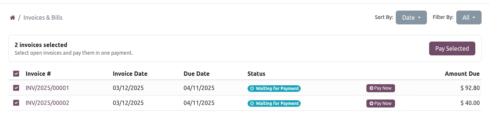
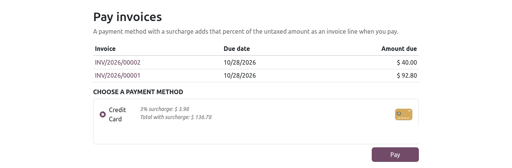
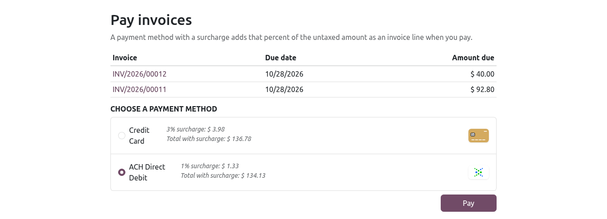
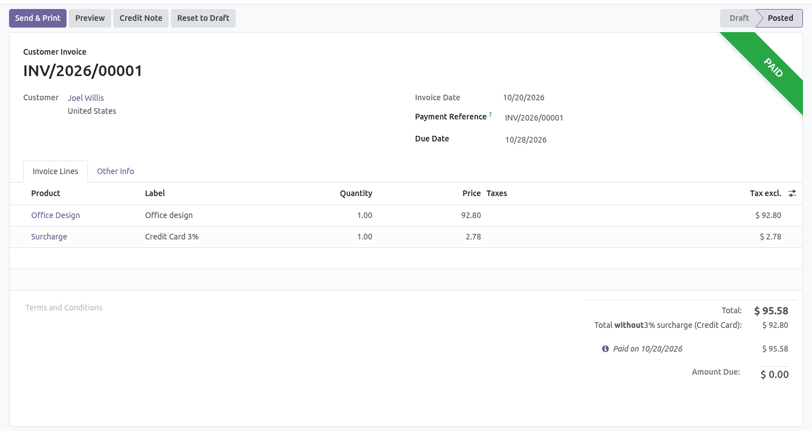

Let portal customers select several open invoices and pay them in one online payment. Each payment method can add its surcharge percent as a line on every invoice that is paid.
The portal pay button handles one invoice at a time.
A card fee collected at the provider never appears as a line on the customer invoice.
Select the invoices, show the surcharge, then add the line when the payment succeeds.
The payment amount is the open balance plus the surcharge. After the provider confirms the payment, each invoice receives a surcharge line and the payment is reconciled.

Portal invoices. Select one or more open invoices and pay them together.

Before payment. The customer sees the balance, the surcharge, and the total.

ACH Direct Debit. Each payment method keeps its own surcharge percent.

After payment. The surcharge is a line on each invoice that was paid.
On My Invoices, the customer checks the open invoices and pays the combined balance with any published payment provider.
The pay dialog shows the invoice balance, the surcharge amount, and the total that will be charged.
When the customer pays, the surcharge percent of that payment method is added as a line on every selected invoice.
The provider charges the balance plus the surcharge. The payment is reconciled against the invoice after the line is added.
Step 1. Install Portal Multi Invoice Payment with Card Surcharge.
Step 2. Open the payment method and set Surcharge (%). A method left at 0 does not add a line. If the method already has a surcharge percent, that percent is used.
Step 3. Publish a payment provider on the website.
Step 4. The customer opens My Invoices, selects the invoices, and pays. Each paid invoice receives the surcharge line.
The surcharge line is not taxed, so the amount on the invoice matches the amount charged.
A single invoice paid from the portal uses the same surcharge.
optiOdoo Solutions
optiodoosolutions@gmail.com
https://www.optiodoo.com